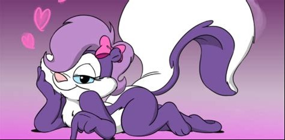

About Fifi LaFume
Fifi LaFume is a character from the TV series Tiny Toon Adventures
She likes you. Wanna be her boyfriend?
Fifi's Characteristics
- She is the protege of the classic Warner Bros. character Pepe LaPew.
- She is purple with a white torso and a white stripe down her back and tail.
- She is known to persue potential boyfriends very persistently.
Fifi's Friends
List of Fifi's friends is below